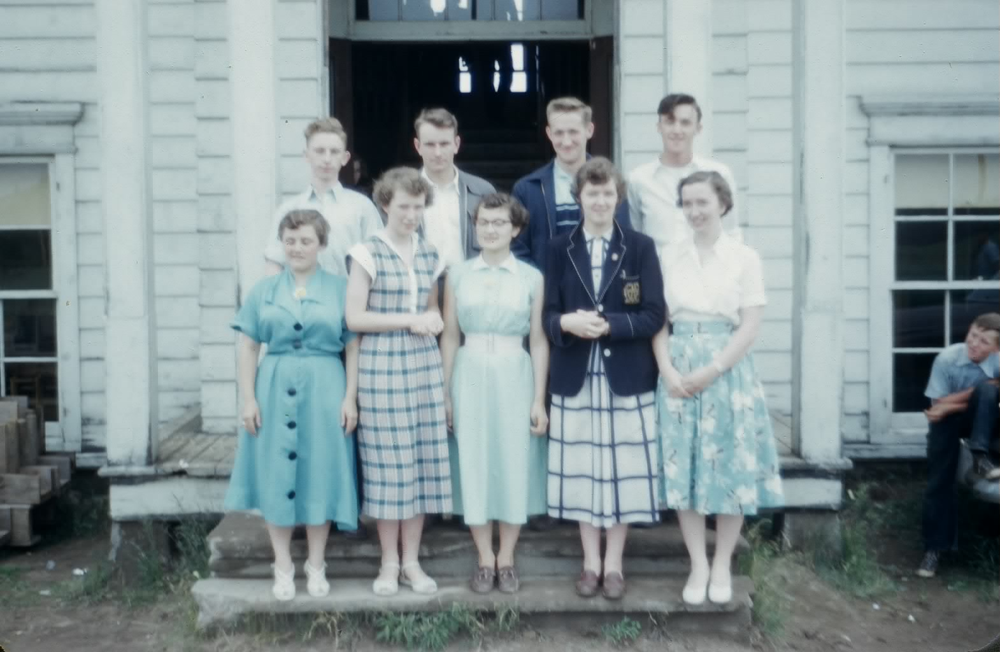
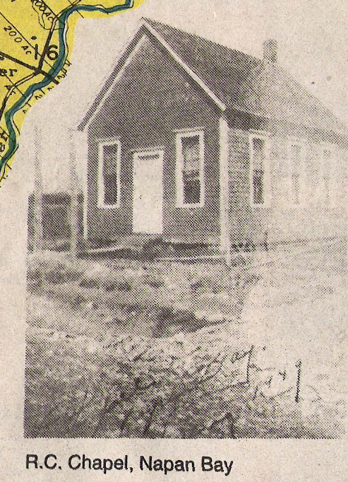

The Family Chronicle
No.172 May 6, 2009
____________________________________________________________________

MRHS Graduation class of 1954. From left to right, front row: Babette Noble, Annie Williston, Ruth Lewis, Margaret Watling, and Barbara Godfrey. Second row: Philip Williston, Ingram Fowlie, Edward Godfrey, and, Douglas Williston (Thanks to Eddie and Barbara for confirming names)
Correction – Chronicle 170
Brother Ken tells me that Brother John, not Brother Walter, was driving the car on the Tabusintac Hill and the fish were in the back of the car with the geese on luggage rack
Whiffle Tree
A horse collar was fitted over a horses head and, in effect, was the part of the harness used to pull a wagon or sled. The actual connection to the wagon or implement was a set of traces. The part of a wagon or implement where the traces connected was called a whiffle tree, (sometimes called a whipple tree).
A whiffle trees is a piece of hardwood, perhaps thirty inches long to which the traces are fastened. The whiffletree, in turn, is attached to the wagon or implement by a clevis so it could pivot. A team of horses required two whiffletrees; a three horse team required three whiffletrees with a special arrangement to give each an horse equal leverage.
Unfortunately, I was not able to find a diagram or photo
Agricultural Society #103
Family Chronicle #166 listed members of Agricultural Society #103. The following are typical items and costs taken from the same records for 1942-1944.
Year Item Cost
Bagged bagged lime $ 3.15 per ton
*Can of Ceresan $ 1.00
Unloading lime - $ 2.50per day
#8 binder twine $ 0.90 per ball
Membership $ 1.00
1 bag hydrated lime $ 0.60
Service I sow $ 1.00
1 paper bag $ 0.05
1 bag of oats $ 3.15
Trucking fertilizer $ 1.50
1 bag wheat $ 4.00
1 bbl potatoes $ 4.50
1# alsike clover $ 0.30
1 lb turnip seed $ .$.75
1 bu. barley $ 1.60
1 ton hay $24.00
1 DDT $ 1.50
1 Mangles $ 0.45
* used to treat grain seed to prevent rust
Follow-up

I thank Barry Mackenzie for above photo and transcribed portion of the Adams article regarding the RC Chapel in Napan Bay.
Two Roman Catholic Chapels served the people of Napan. One was located in Upper Napan known as Saint Columkille Church (1917-1986). Irish families in Upper Napan erected the Chapel. When the church was torn down a memorial stone was erected on the site of Saint Michael's Basilica.
The second Catholic chapel was located in Napan Bay and was a mission of Saint Andrew's Catholic Church in Loggieville. The chapel held about 30 people and was built on the land of Mr. Alvin Taylor. Apparently either Father Wallace or one of the last pastors of the mission sold the chapel building to Mr. William Jardine in the mid 1950s for one hundred dollars. William Jardine moved the chapel building to his property and used it as a barn.
Alexander McKnight tells the story that some Catholics were not pleased that their former chapel [sentence incomplete]
"Mr Jardine complained that when he went to milk his cows (both morning and evening) he could never get a drop of milk out of them because they were constantly kneeling down. I guess they were Holy Cows!"
Black River
Provincial Archives of New Brunswick lists a number of Black river related communities. The description of Black River Bridge, which seems he most generic, reads as follows:
Located 6.58 km WNW of Bay du Vin: Glenelg Parish, Northumberland County: William Francis Ganong identified the Mi'kmaq name for Black River as Matpwantagook: settled in 1820 by Scottish immigrants: first called Glenelg: renamed Black River when post office was created: PO Black River 1853-1951: in 1866 Black River was a farming settlement with about 30 families: included Upper Settlement: in 1898 Black River had 1 post office and a population of 300.
Located 7.52 km SW of Black River: Glenelg Parish, Northumberland County: settled in 1790 by Scottish immigrants: PO from 1860: in 1866 Black River Bridge was a farming and lumbering settlement with approximately 22 resident families: in 1898 Black River Bridge had 1 post office, 1 hotel, 1 sawmill, 1 grist mill and a population of 200.
The Family Chronicle (Copyright) is an occasional newsletter published by Don Glendenning and posted on the family website. It is intended to share information about my family, community and the times in which I grew up. While every effort is made to be accurate, errors are likely to occur. Comments, enquiries and information may be sent to 62 Queen Elizabeth Drive, Charlottetown, PEI, C1A 3A9. Tel: 902 892 5859. Email: don@glendenning.net Web: www.glendenning.net/don